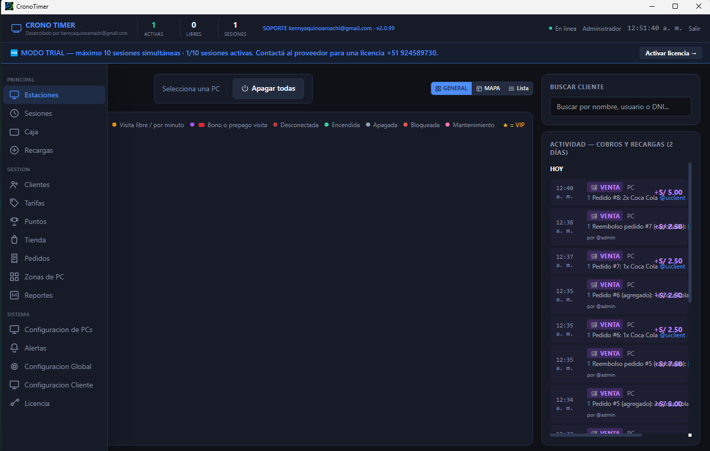

Gestión de clientes y cuentas
Registra clientes, administra sus cuentas y consulta la información asociada a su uso del servicio.
Administra clientes, controla tus PCs y organiza las zonas de tu local desde una sola herramienta diseñada para el día a día de un LAN Center.
Modo gratuito hasta 10 PCs · Planes anuales y permanentes disponibles

Crono Timer es un controlador exclusivo para cibercafés y LAN Centers. Administra estaciones, clientes, caja, recargas, puntos, tienda y configuraciones desde un mismo lugar.
Registra clientes, administra sus cuentas y consulta la información asociada a su uso del servicio.
Configura sesiones de amanecida y sus condiciones para atender horarios extendidos.
Gestiona puntos para clientes y fomenta su uso dentro de las opciones disponibles en tu local.
Organiza los equipos por zonas y configura categorías o condiciones según el tipo de servicio que ofreces.
Ofrece productos o servicios desde la tienda vinculada a la experiencia de tus clientes.
Centraliza la configuración y la administración general del sistema según los permisos disponibles.
Visualiza el estado de las PCs, sesiones activas, equipos libres y actividad del local desde el panel de estaciones.
Organiza cobros, recargas y actividad reciente para llevar un seguimiento más claro de las operaciones del negocio.
Prueba Crono Timer gratis hasta 10 PCs. Si tu local necesita más equipos o una licencia permanente, consulta las opciones disponibles con nuestro asesor de ventas.
Empieza a organizar tu LAN Center con hasta 10 sesiones de PC simultáneas, sin costo.
¿Necesitas ampliar el uso para tu negocio? Consulta con el asesor de ventas las condiciones y el precio del plan anual.
Consulta la opción de licencia permanente y sus condiciones directamente con el asesor de ventas.
Los precios, requisitos y condiciones de las licencias anual y permanente se consultan con el asesor de ventas.
Descarga los instaladores desde la carpeta de Google Drive y prepara tu controlador para gestionar clientes, PCs y servicios.
Próximamente encontrarás aquí un tutorial para conocer las funciones del controlador y configurar tu LAN Center.
Cuando publiques el video en YouTube, podrás insertarlo en este espacio para que tus usuarios aprendan a usar Crono Timer.
Haz clic en cualquiera de los botones “Descargar Crono Timer” para abrir la carpeta de Google Drive.
Sí. Puedes usar el modo gratuito con un máximo de 10 PCs/sesiones simultáneas. Para planes anuales o licencia permanente, consulta con el asesor de ventas.
El video se mostrará en la sección “Video tutorial” cuando agregues el enlace de tu video.
Contacta al asesor de ventas por WhatsApp al +51 924 589 730 para consultar precios y condiciones de los planes.
Está pensado para LAN Centers que necesitan organizar clientes, equipos, zonas, sesiones y servicios desde un mismo controlador.